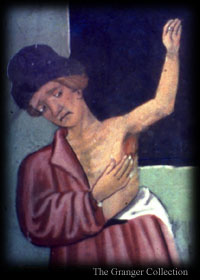

|
 Q. What are the signs of infection?As a child, I was kept away from victims, but I have seen the repulsive lumps on those struck down in later outbreaks, most recently just nine years ago. Giovanni Boccaccio of Florence described the symptoms accurately:
French physician Gui de Chauliac noted that this form of the disease usually causes death in five days, but some people recover, as he himself had. A more deadly form, "with continuous fever and spitting of blood," kills in three days. Other writings suggest a mysterious third form that strikes without symptoms, so sudden that some who retire at night in health are found cold in the morning. |